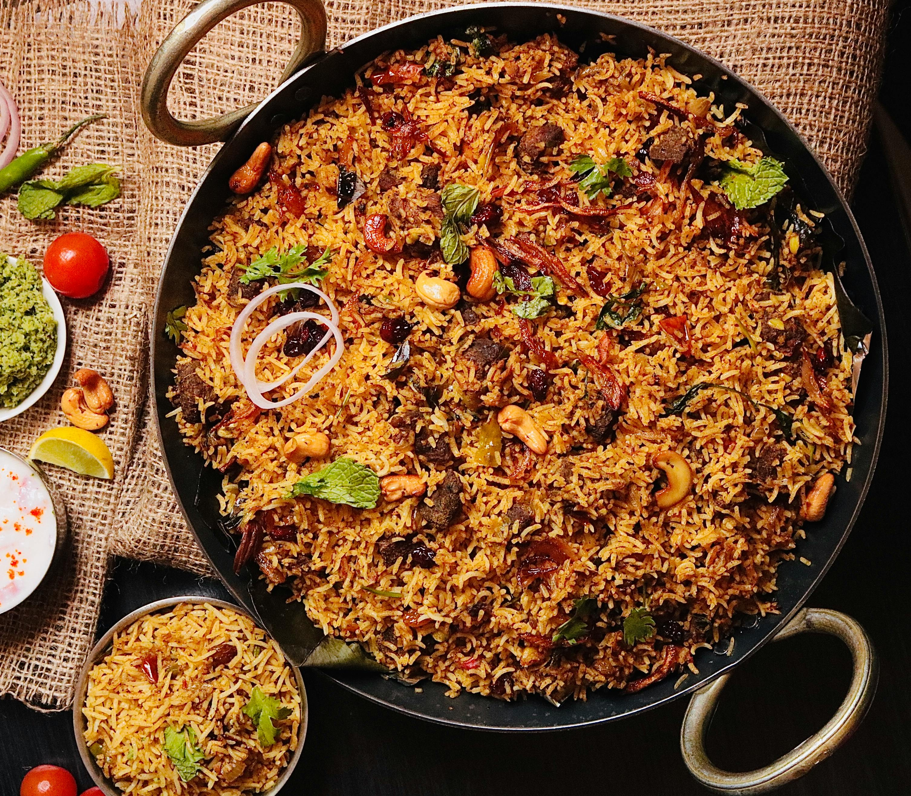

Biryani Rice
A delicious and aromatic Indian rice dish with spices and meat.

Carbonara
Classic Italian pasta with creamy sauce, bacon, and parmesan cheese.

Fried Chicken
Crispy, juicy, and perfectly seasoned chicken pieces.

Pancit
A Filipino noodle dish served with vegetables and meat.

Adobo
A Filipino favorite made with chicken or pork simmered in vinegar and soy sauce.
Sinigang
A sour tamarind soup with pork and vegetables, a Filipino classic.
Kare-Kare
A rich peanut stew with oxtail and vegetables, served with bagoong.

Lumpia
Crispy spring rolls filled with ground meat and vegetables.